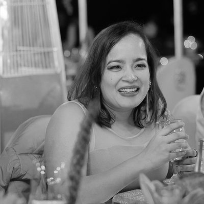

who we are when no one's watching
About Joyus
Through collaboration, a polymathic mindset, creativity, and playful inquiry, we help teams uncover new ways of seeing, thinking, and building together.
Based in Bangalore and New York City, we work across design, storytelling, behavioral science, system creation, business and culture, revenue and creativity.
how we work
Five things we choose
-
wonder
instead of dread, we walk towards the unknown.
-
play
instead of paralysis, we make things.
-
curiosity
instead of defensiveness, we go looking for what could have been missed.
-
emergence
instead of forcing a thesis, we listen for what it's trying to be.
-
wayfinding
instead of rigid control, one eye on the destination, the other on what the project reveals.
selected work
A few we're proud of
things we make & explore
What keeps us curious


our founders
The two of us
Kahran Singh
co-founder
Kahran defines creative brain meets analytical brain. With 15 years of experience spanning product, marketing and consulting with companies large and small, as well as running an edtech company, he has seen the system from the inside — and seen as an investor what makes business work from the outside.
Kahran has built a unique perspective on the problems that businesses face and what they need to solve them. It all starts with the people and the experience. To him, everything is an experience that can be designed with intention, and he brings that intent and care to everything he does.
He has a BSc in Computer Science from Tufts with a minor in Economics, and is currently pursuing his MFA in Creative Writing & Poetics at the Jack Kerouac School of Disembodied Poetics. see more about him →

Divya Tak
co-founder
Divya believes you can get better at anything — everything! — by chipping away at it, working on it day after day in manageable chunks you can keep doing, day after day. That lived belief has grown her skills from physics to philosophy, games to visual art, design to Claude Code.
As a speaker and workshop facilitator she brings whimsy, clarity, and respect, while staying authentic to her polymathic talents. She challenges us to remember why — of all the things we could be doing on this blue planet, in this vast universe — we're choosing to do this one thing.
Master's in Physics from IIT Kharagpur. see more about her →